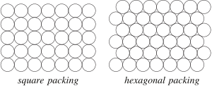
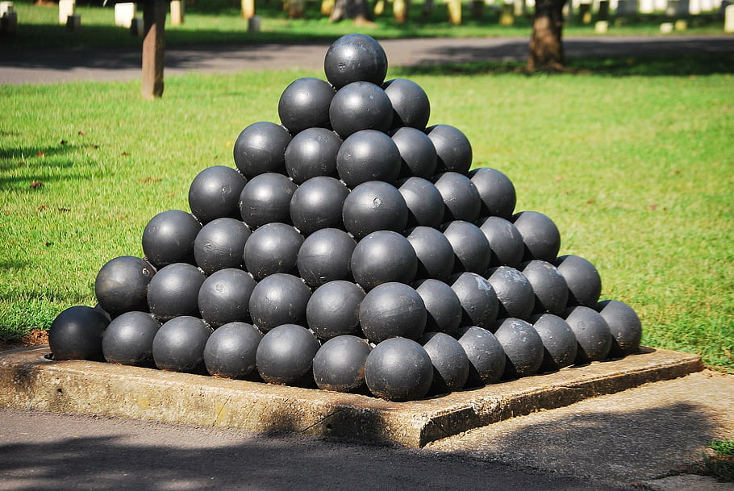

The Lattice Packing Problem in Dimension 9
The Hermite constant γn characterizes the maximum density of a sphere packing in Rn where the centers of the spheres form a lattice. My research, in collaboration with Wessel Van Woerden, successfully determined this constant for dimension 9.


Scientific Achievement
By implementing a highly optimized version of Voronoi's algorithm, we were able to classify the relevant lattices in dimension 9. This computational feat required significant algorithmic refinements to handle the exponential growth of the search space in higher dimensions.
The results confirm the value of the Hermite constant γ9 and provide a complete classification of the extreme lattices in this dimension.
arXiv:2508.20719 M. Dutour Sikirić, W. Van Woerden, The lattice packing problem in dimension 9 by Voronoi's algorithm (2025).
Data available at Zenodo:15707640.